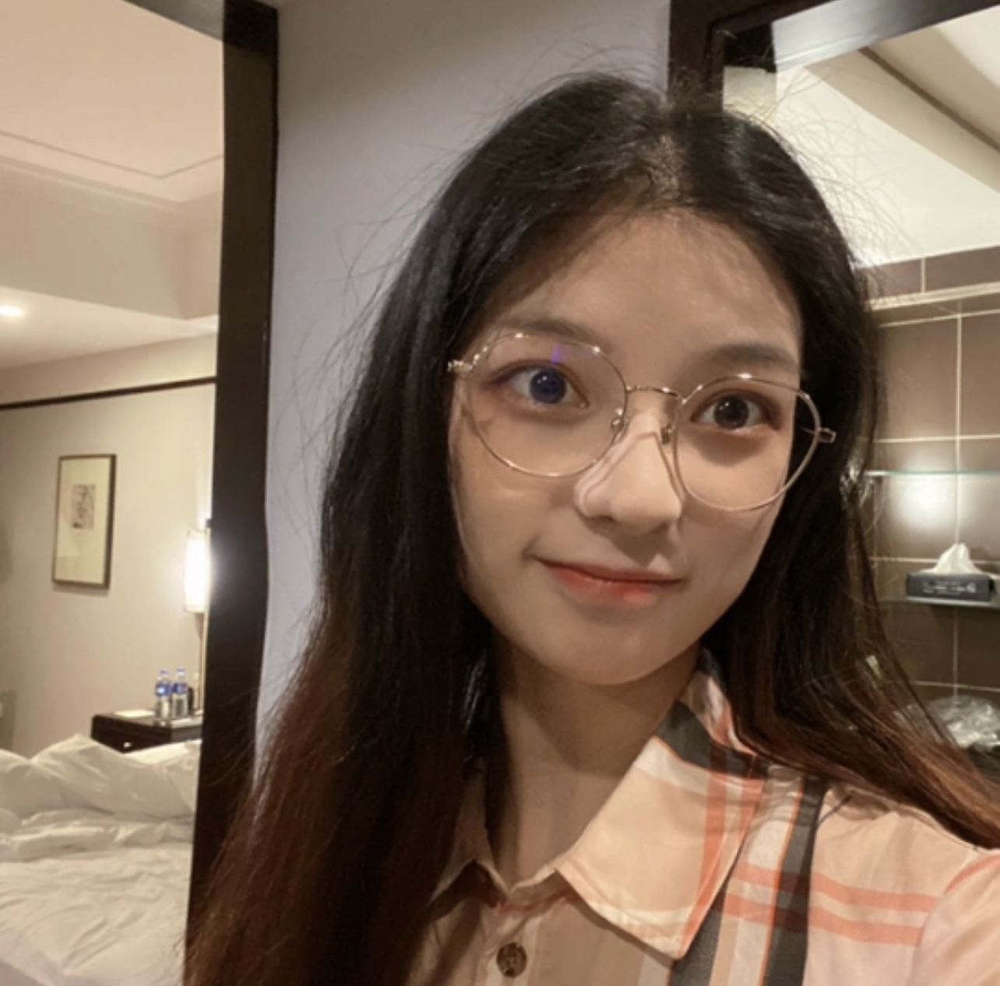
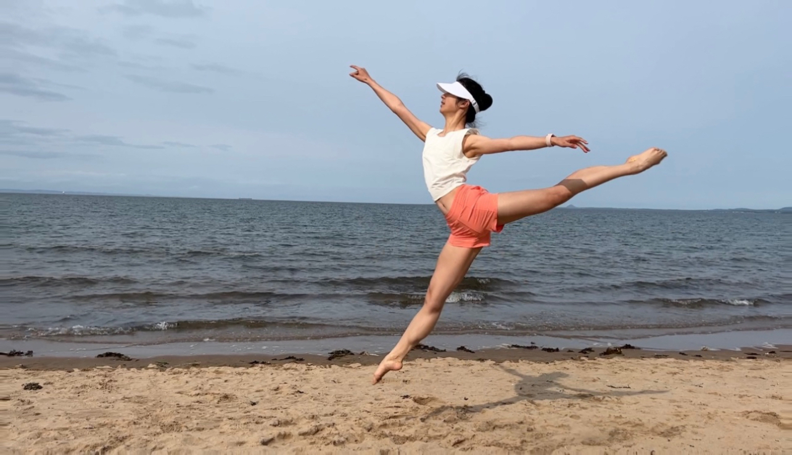

 Hello there! I'm Qiuye Zhang, a second-year AI & CS student at the University of Edinburgh. My enthusiasm for computational neuroscience and computational psychiatry runs deep, as I am passionate about understanding the intricacies of our brains and finding ways to address the various diseases that can affect them. As I continue to study, I am constantly training and exploring my internal model as well, trying to figure out the values of things in my life and explore uncertainities.
Outside my academic pursuit, I like moving my body. I dance in both ballet and contemporary styles. They provide a fascinating blend of discipline and creative expression, while my recent foray into running has been a journey of self-discovery and endurance. To harmonize the intensity of dance and running, I incorporate yoga into my routine as well. These diverse activities not only contribute to my well-being but also provide valuable life lessons in resilience, balance, and self-awareness.
 My fascination with existentialism, particularly the works of Albert Camus, has had a profound impact on my life. Existentialism as a philosophy grapples with questions about the meaning of existence, individual freedom, and the nature of human consciousness. Camus' emphasis on the absurdity of life and his exploration of how individuals can forge meaning in an inherently chaotic world have resonated with me on a deep level. His masterpiece, "The Stranger," serves as a compelling examination of the human condition, and his ideas have shaped my personal outlook.